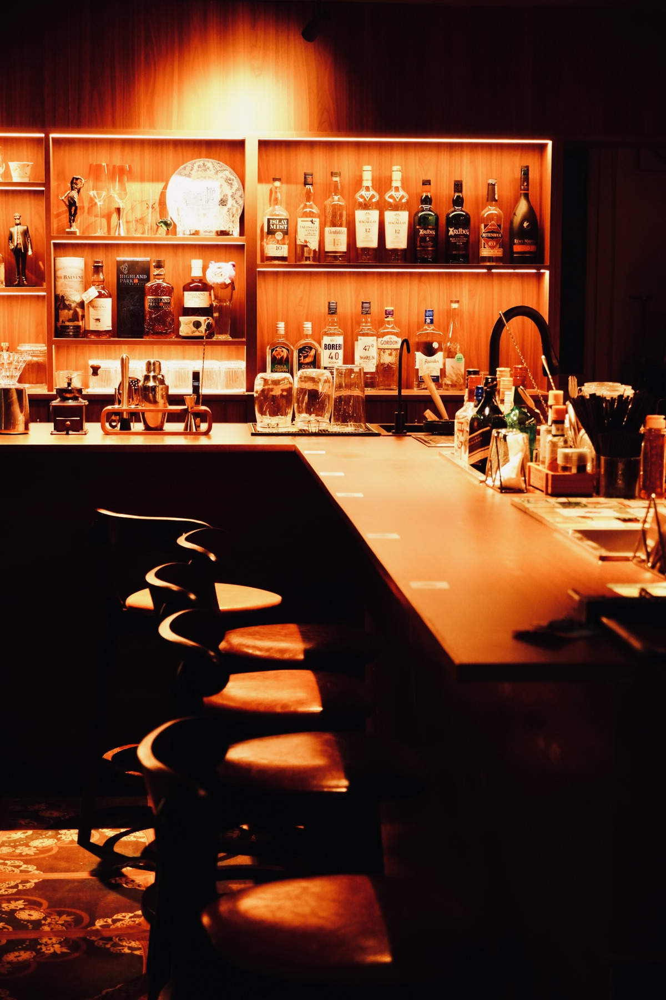
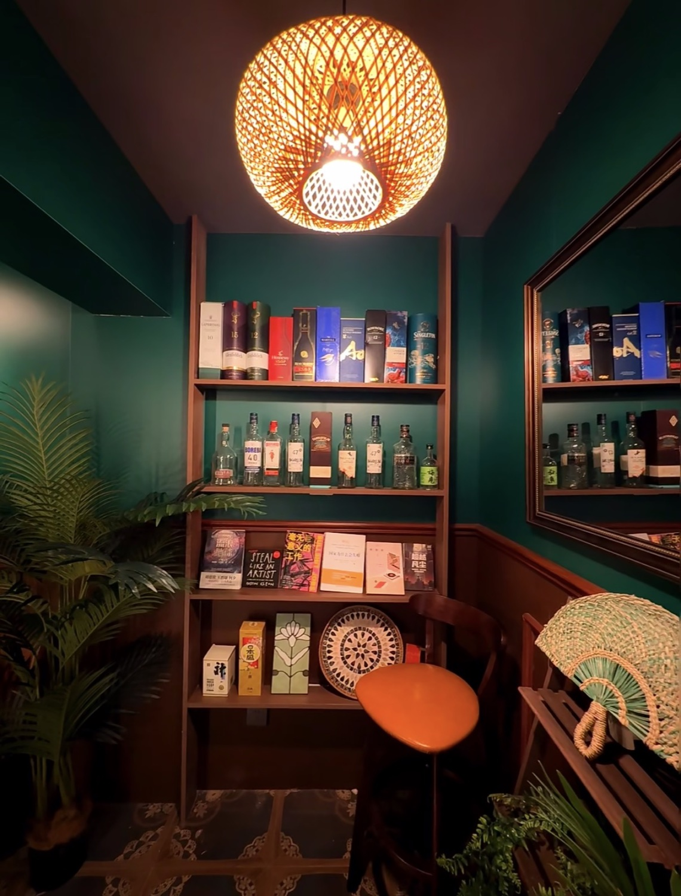
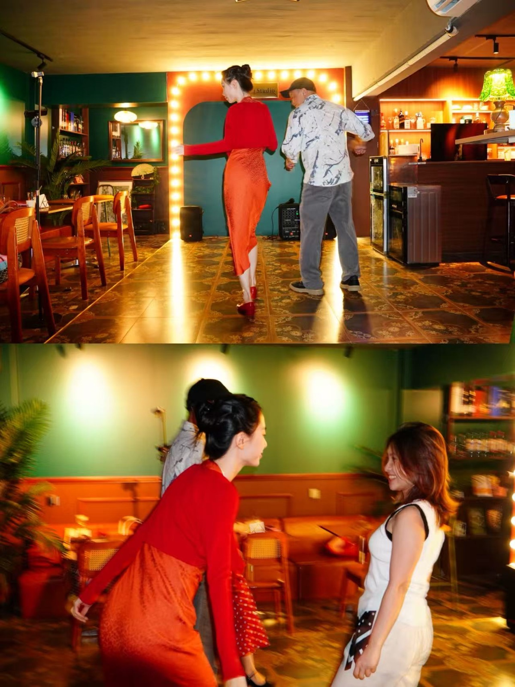

今晚你需要什么？
P.S.
We saved you
a drink.
扫码之后不用注册。先找一杯适合今晚的酒，再聊到一个平时不会问的问题，或者带走一句陌生人的后话。



ABOUT · 后话客厅
一间可以把话， 慢慢说完的客厅。
“后话”，是当时没说完，后来又想起的话。我们想把酒吧做成一间可以慢慢坐、慢慢喝，也慢慢把话说完的客厅。
你可以从一杯适合今晚的酒开始，和同桌聊一个平时不会问的问题，或者给没有见过的陌生人留下一句话。
01—03
从自己，到同桌的人，
再到一个陌生人。
选一条路开始。随时都可以返回这里。
今晚的匿名名字
正在生成…
无需登录。这个名字只保存在当前设备，用来维持今晚的体验。